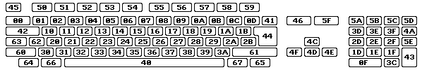

Tu je tabu¾ka, ktorá ukazuje všetky rawkey hodnoty v hexa hodnotách: 
Mapa kláves klávesnice US (pre porovnanie):
Mapa kláves klávesnice FR (french):
Mapa kláves klávesnice DE (german):
Mapa kláves klávesnice IT (italiano):